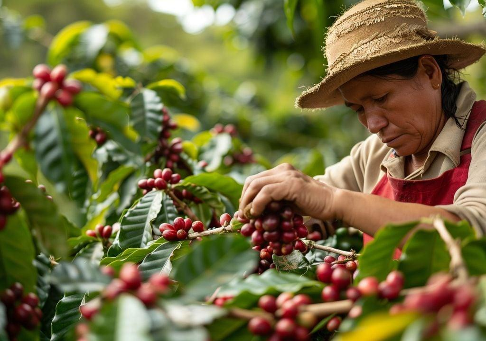

Do cultivo à sua xícara
Cada grão carrega uma história de dedicação, cuidado e respeito às nossas origens.

O que nos inspira
Conheça os princípios que orientam cada etapa da nossa jornada.
Missão
Oferecer cafés especiais de alta qualidade, proporcionando experiências únicas e valorizando a tradição cafeeira.
Visão
Ser reconhecida pela excelência dos nossos cafés e pela conexão que criamos com nossos consumidores.
Valores
Qualidade, respeito à natureza, tradição, transparência e paixão pelo café.